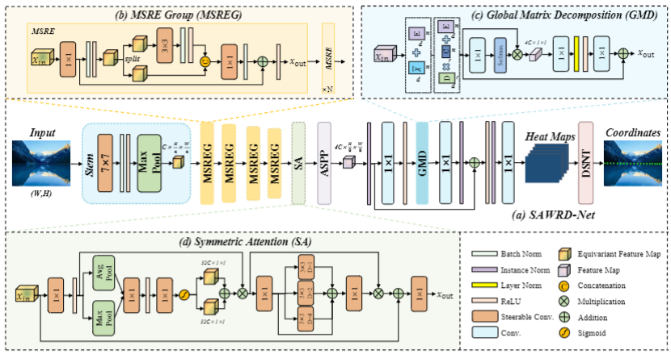
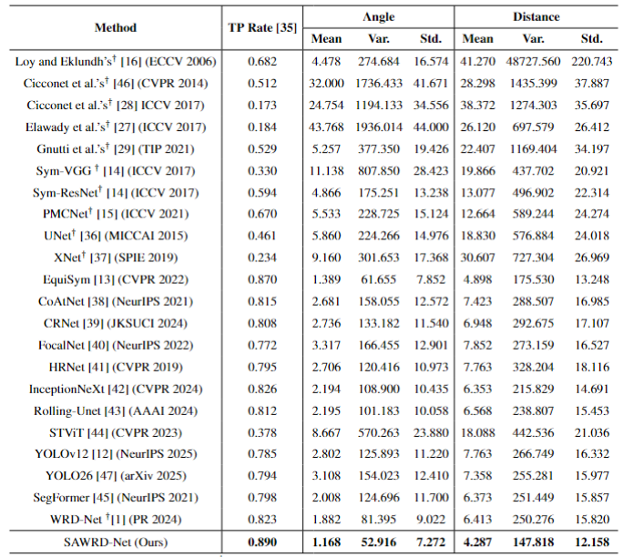
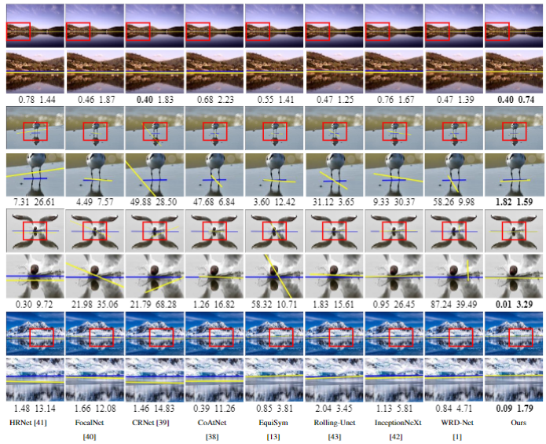
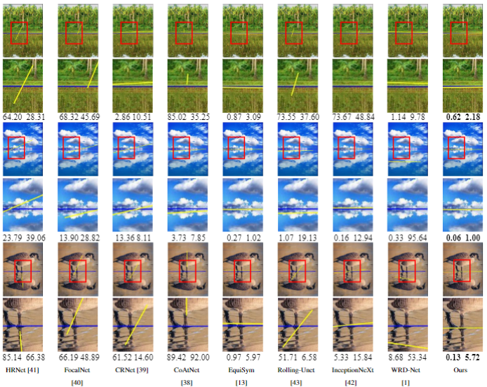

Water Reflection Detection Using Symmetric Attention
|
 |
The architecture of the proposed SAWRD-Net.

|
 |
Comparison of the baselines and SAWRD-Net in terms of different performance metrics.
|
 |
Qualitative results of water reflection detection on the WRSD. Within each group of the figure, the upper row shows the detection results of eight baselines and SAWRD-Net, while the lower row shows the zoomed-in view of a selected region in the corresponding image. The yellow lines represent the axes detected by the models, while the blue lines denote the ground-truth. The two values displayed below an image indicate the angle and distance calculated between the detected axis and the ground-truth axis.
|
 |
| |
Qualitative results of water reflection detection on the WRSD. Note that the images displayed here are those used in the experiment after being rotated clockwise by 90°. Within each group of the figure, the upper row shows the detection results of eight baselines and SAWRD-Net, while the lower row shows the zoomed-in view of a selected region in the corresponding image. The yellow lines represent the axes detected by the models, while the blue lines denote the ground-truth. The two values displayed below an image indicate the angle and distance calculated between the detected axis and the ground-truth axis.
@article{article,
author = {Yao, Shuxuan and Wang, Chengjia and Sun, Jianyuan and Dong, Junyu and Dong, Xinghui},
year = {2026},
month = {08},
pages = {},
title = {Water Reflection Detection Using Symmetric Attention},
journal = {Pattern Recognition},
doi = {10.1016/j.patcog.2026.114821}
}